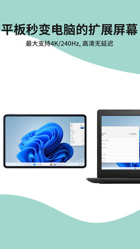

ExtensoDesk 实战教程：把安卓平板变成 Windows 第二显示器
从零开始，一步步教你用 ExtensoDesk 把平板变电脑副屏——WiFi/USB 双连接、扩展屏配置、窗口拖拽、自动重连，解决新手上路最常见的几个坑。
读完这篇教程，你能在 10 分钟内把手上的安卓平板变成 Windows 电脑的第二显示器，窗口自由拖拽、断线自动恢复，不再只是拿平板刷视频。这一切依赖 ExtensoDesk——它的官网上还有更多功能介绍。
准备工作
开始之前确认三样东西：
- 电脑：Windows 10 或更新版本（7 和 8 不支持）
- 平板：安卓 8.0 以上，建议屏幕 8 寸以上体验才够好
- 网络：WiFi 连接的话电脑和平板要在同一个局域网；USB 连接的话一根靠谱的数据线就行
版本方面，Windows 服务端建议直接装最新版，Android 客户端也要跟上——有些功能（比如 USB 断开自动转 WiFi）是 v1.3.2 之后才有的，客户端太旧会对不上。
第一步：装 Windows 服务端
去官方下载拿到安装包，双击一路下一步就行。装完会在系统托盘里出现一个小图标，右键它选「开机自启动」，这个动作很重要——每次开机你都不想手动开一次吧？
装完别急着关窗口，有个地方要注意：首次启动它会显示本机的几个 IP 地址，记一下其中一个待会儿平板要用到。
第二步：装 Android 客户端
平板这边装 App，装完打开会要求你允许几个权限——全部允许，这是多屏协作必须的，不给权限连不上。
打开后首页是空白的设备列表，点右上角的「扫描」按钮等几秒，正常应该能扫到你刚才电脑服务端显示的那个 IP。

扫到了就点一下，电脑那边会弹一个「是否允许这台设备连接」的确认框——勾上「以后不再询问」再点允许，这样下次自动重连就不用每次手动确认了。
第三步：选连接方式（WiFi 还是 USB）
两种方式各有优劣，先说结论：WiFi 日常用，USB 追求稳定。
WiFi 连接：零线材但怕断
WiFi 最大的问题是稳定性。路由器重启、平板走到信号弱的地方、电脑休眠唤醒，任何一个环节波动都可能断。好在 ExtensoDesk 有自动重连功能——平板端 App 设置里找「自动重连」开关打开，默认是关的，记得手动开。
USB 连接：插线就稳但线要靠谱
USB 连接的好处是不走网络、零延迟、不断线。坏处是你得有一根够长的数据线，而且要注意——某些老平板高负载下 USB 会降速甚至断开，这时候 v1.3.2 以上的客户端会自动切到 WiFi 继续，不用你管。
两种方式也能随时切换，USB 插着的时候优先用 USB，拔了自动转 WiFi（这个智能切换是会员功能，免费版只支持基础重连）。
第四步：切换到扩展屏模式
默认连上是镜像模式——平板完全克隆电脑画面。我们要的是扩展屏模式：平板变成一块独立的显示器。
怎么切：Windows 服务端主界面里找到「屏幕模式」，选「扩展」。切完以后在 Windows 系统设置里能看到两块屏幕了——显示器 1 是你的物理主屏，显示器 2 就是平板。

这时候试试把一个窗口拖到平板上：鼠标在窗口标题栏按住往左（或往右，看你两块屏怎么摆的）拖，拖过边界就会出现在平板屏幕里。嫌鼠标拖麻烦？Win + Shift + 方向键，一键把当前窗口移到旁边那块屏。
第五步：配好窗口偏好（v1.2.0 新增）
这是很多人会忽略的一步，但配好之后用起来舒服很多。打开 Windows 服务端设置，三个选项值得调：
新窗口默认去哪块屏。如果你想让平板专门放参考资料，主屏专注干活，就设成「新窗口总是出现在主屏」。反之如果主屏想保持干净，就设成「固定在平板副屏」。默认是跟随鼠标位置，够用但不够省心。
任务栏要不要在副屏显示。默认 Windows 只有主屏有任务栏，ExtensoDesk 可以让副屏也有一个。如果你经常在平板上切换窗口，打开这个选项会方便很多——不然每次切窗口还得把鼠标挪回主屏找任务栏。
任务栏按钮跟随哪块屏。扩展屏有任务栏之后，新窗口的按钮出现在哪块屏的任务栏上？推荐选「跟随窗口实际所在的屏幕」，平板上的窗口按钮就在平板的任务栏里找，逻辑最顺。
常见卡点：三个新手最容易栽的地方
卡点一：平板扫不到电脑
扫了半天列表还是空的，先别急着重装。90% 的情况是这两个原因：
- 电脑和平板没在同一个局域网——电脑插着网线、平板连的是隔壁一个 WiFi，两边网段不一样当然扫不到。确认一下手机连同一个 WiFi 能不能打开路由器管理页，能的话平板应该也能扫到。
- Windows 防火墙拦截了——ExtensoDesk 装完会自动加防火墙规则，但有时候被 Windows 更新冲掉了。手动去防火墙里找 ExtensoDesk 相关的规则，确保「允许入站连接」勾上。
实在扫不到可以手动填 IP：平板 App 里应该有「手动添加设备」的入口，直接把电脑的 IP 输进去试。如果想知道更多网络排查的细节，翻翻ExtensoDesk文档里有专门的连接排错章节。
卡点二：连上了但过一会儿就断
这个问题分两种情况。
如果是 WiFi 连接频繁断，先确认信号强度——平板离路由器远的话换个位置。再就是开自动重连，断了让它自己接。如果还是不行，打开平板端设置里的「连接质量分析」，跑一下看看是延迟高还是丢包严重，分析结果会告诉你具体是网络问题还是设备问题。
如果是 USB 连接断，大概率是数据线的问题——那种只有充电功能没有数据传输功能的线别用。换一根手机原装的数据线试试。
卡点三：陌生人也能连我的电脑
这个是安全问题。默认情况下任何人只要扫到你的服务端都能尝试连接，所以第一次被陌生设备请求连接时要拒绝，然后去电脑端把那个设备拉黑。
更稳妥的做法：平板 App 设置里找「设备管理」，里面列着所有已激活的设备——只保留你自己的平板，其他全部解绑。这样就算陌生人扫到你的电脑，他的设备没被激活，直接拒绝连接。这个机制类似 AirDrop 的可见性开关，相当于给你的电脑加了一层物理门禁。
进阶：平板也能改模式了
v1.4.2 之后，平板端 App 可以直接修改 Windows 服务端的模式设置了——不用每次都回到电脑上改扩展屏/镜像屏切换，在平板上点两下就行。如果你是笔记本外接平板，有时候物理显示器根本不在手边，这个功能就特别实用。
另外提一嘴，ExtensoDesk 还有声音同步、触摸模拟鼠标、远端剪贴板这些额外功能，扩展屏配好之后可以慢慢摸索——但那属于进阶玩法，先把副屏跑通再说。如果想深入了解 ExtensoDesk 的整个资料体系，GitHub、Gitee、GitCode三个仓库也各有一份完整拷贝，相当于做了三重备份。